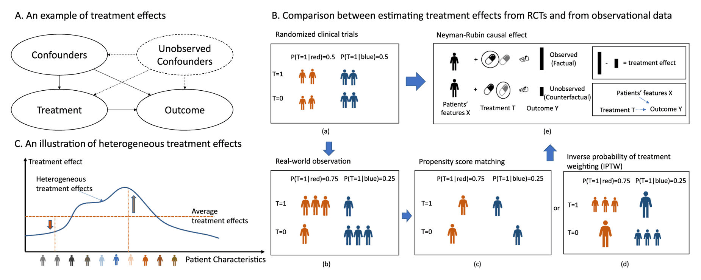
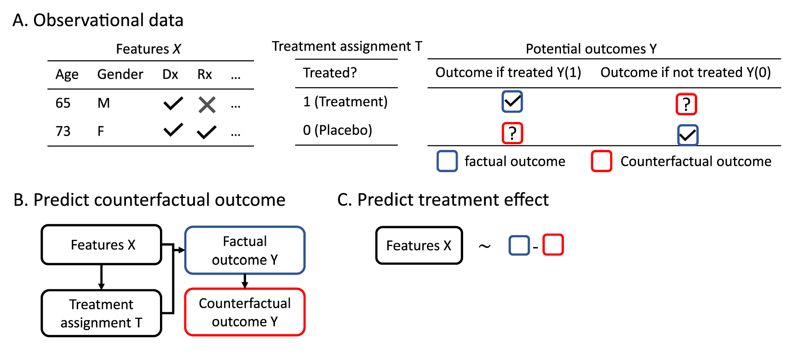
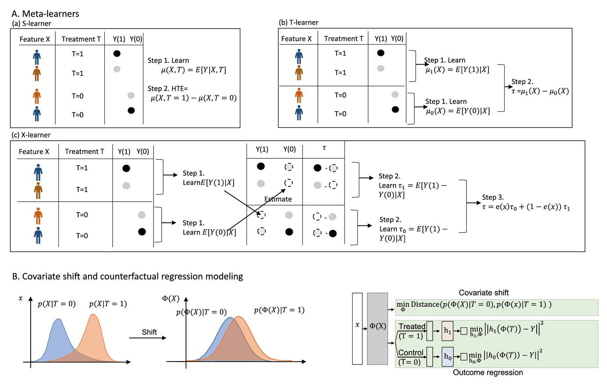
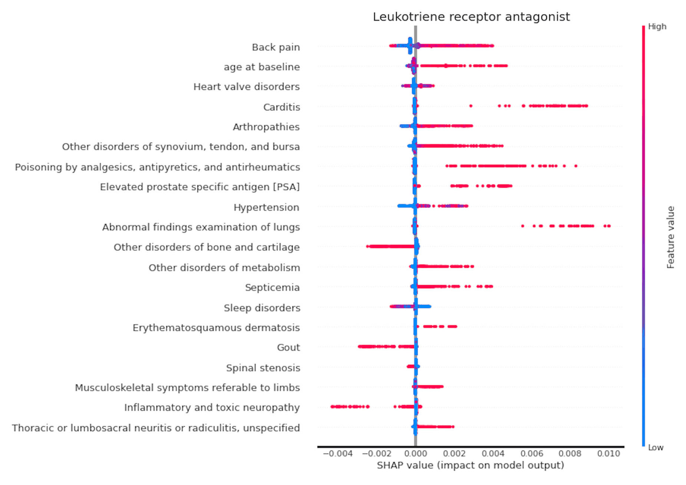
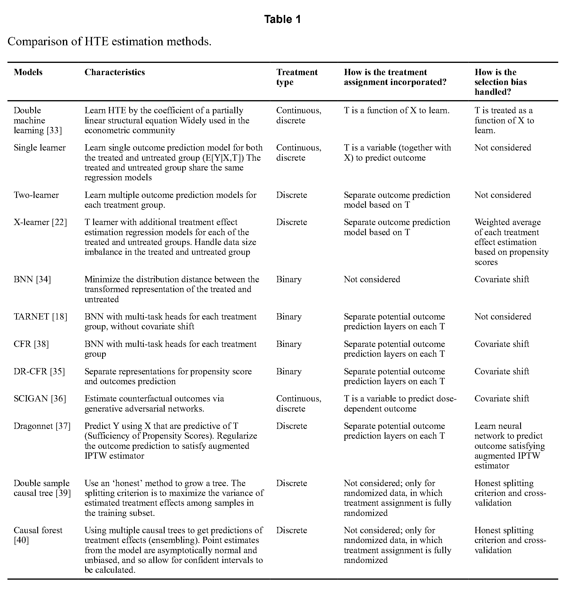
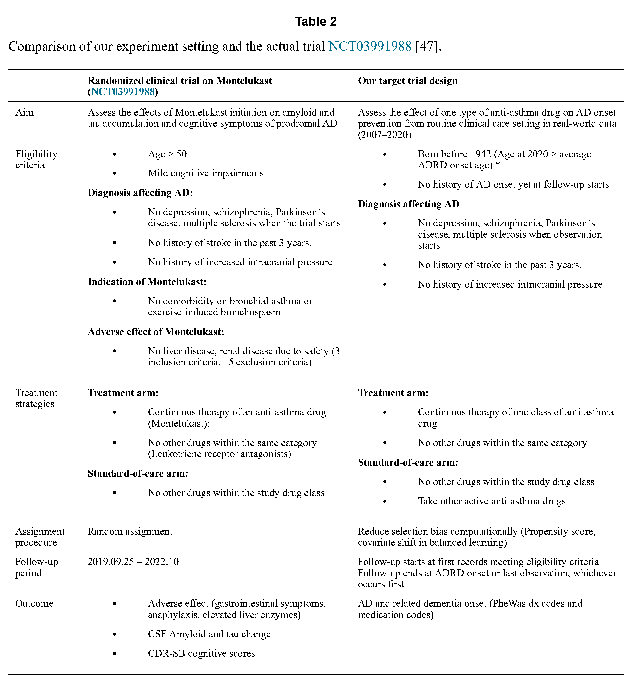
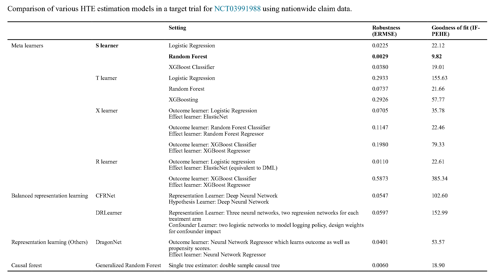

（作者手稿；可在PMC获取，2024年1月1日起）
Yaobin Ling · Pulakesh Upadhyaya · Luyao Chen · Xiaoqian Jiang · Yejin Kim*
德克萨斯大学休斯顿健康科学中心生物医学信息学院，医疗安全人工智能中心，美国德克萨斯州休斯顿市Fannin 7000
*通讯作者：yejin.kim@uth.tmc.edu (Y. Kim)
摘要
大数据和（深度）机器学习一直是数字医学领域中雄心勃勃的工具，但这些工具主要关注关联。医学中的干预关乎因果效应。平均治疗效应长期以来一直作为因果效应的一种度量被研究，其假设所有人群具有相同的效应量。然而，对于某些复杂疾病，似乎并不存在"放之四海而皆准"的治疗。治疗效应可能因患者而异。估计异质性治疗效应（HTE）可能对发展个体化治疗具有重大影响。近年来涌现了许多用于估计HTE的先进机器学习模型，但将其转化到真实世界医疗领域的研究仍然有限。为填补这一空白，我们回顾并比较了十一种近期的HTE估计方法，包括元学习器、表示学习模型和基于树的模型。我们基于全国性医疗索赔数据开展了一项综合性基准实验，并将其应用于阿尔茨海默病的药物再利用。我们提供了在医疗领域开展HTE估计分析所面临的一些挑战与机遇，以弥合创新的HTE模型与真实世界医疗问题部署之间的差距。
关键词
因果推断；目标试验；条件平均治疗效应；药物研发；深度学习；机器学习
利益冲突声明
作者声明，他们没有已知的可能影响本文所报道工作的竞争性经济利益或个人关系。
附录A. 补充材料
本文的补充数据可在线获取：https://doi.org/10.1016/j.jbi.2022.104256。
1. 引言
因果推断旨在发现效应的原因。尽管随机化实验（例如随机临床试验、A/B测试）是识别因果关系的事实上的金标准，但它们有时在经济上不可行，或者当干预对受试者有害时在伦理上不可接受。利用观察性数据（例如真实世界数据）进行治疗效应估计是模拟随机化实验并推断因果关系的一种替代策略。然而，观察不可避免地包含偏倚。混杂变量是既影响治疗暴露又影响结局的变量（图1A）。它是主要偏倚来源之一，可能误导我们得出"治疗对结局有作用"而实际上并不存在的错误结论。为降低观察性数据中此类偏倚以进行治疗效应估计的统计学方法，早已在多个学科中被广泛研究。例如，流行病学与生物统计学中的目标试验框架一直聚焦于通过匹配或加权调整混杂因素来进行假设检验，以推断平均治疗效应（图1Bc、1Bd）。
然而，患者是多样的，治疗效应也各不相同。数十年来针对复杂疾病的药物研发表明，并不存在"放之四海而皆准"的治疗。估计平均治疗效应（ATE）可能把每位患者的异质性过度简单化了。对个体化治疗的需求是巨大的。因此，为每一个体或相似的患者亚群估计治疗效应十分重要，这就是所谓的异质性治疗效应（HTE）（图1C）。HTE估计通过尊重疾病与患者的异质性，在个体化医疗中具有变革性潜力。HTE估计近来在计量经济学（例如uplift建模）和机器学习（非参数HTE）中日益受到关注，但在计算医学领域却鲜有研究。为弥合这一转化努力中的空白，我们回顾并比较了一些近期的HTE方法学，并开展基准实验以检验这些方法在模拟临床试验、发展个体化治疗方面的可行性。我们的基准实验使用了美国约6千万患者的全国性电子健康记录，并在目标试验方案下进行。我们的视野立足于转化性生物医学研究，特别是数字健康领域。本综述与基准论文采用了来自多种来源的符号与命名策略，包括econml、causalml、Künzel等以及Bica等。关于理论与方法学的比较，参见[23–25]；关于计量经济学的视角，参见[26]；关于临床药理学的视角，参见[19]。
2. 预备知识
2.1. 潜在结果框架
在本文中，我们研究在Neyman-Rubin潜在结果框架下构建的模型。假设我们有N个受试者（i = 1, ⋯, N），其特征为X。对每位患者，T表示治疗分配；若受试者处于治疗组t且潜在结局为Y(1)，则T = 1；若受试者处于对照（安慰剂）组且潜在结局为Y(0)，则T = 0。Neyman-Rubin框架是在给定受试者特征X的条件下估计治疗t的治疗效应（图1Be）：
τ(x)=E[Y(1)−Y(0)∣X] (1)
潜在结果框架需要若干假设：
- 强可忽略性（或可交换性）。我们假设不存在未观测的混杂变量，或者我们观测到了所有影响治疗分配T和结局Y的变量X，即 Y⊥T|X。以真实世界用药的语言为例，我们观测到了决定结局和用药的患者特征的充分混杂变量集合。
- 正值性。接受治疗的概率P(T|X)不是确定性的，即 0 < P(T|X) < 1。例如，患者的特征X不会百分之百地保证某种特定药物的使用。
- 稳定单元治疗值假设。每个受试者的潜在结局保持不变，而无论其他受试者接受何种治疗（受试者之间无干扰）。例如，一名患者服用某种药物并不影响其他患者的用药选择。
2.2. 反事实结局
治疗效应估计的一个根本挑战在于，不可能同时观测Y(1)和Y(0)。我们把受试者实际拥有的结局称为事实结局（factual outcome），而把其在另一种情形下的其他假设性结局称为反事实结局（counterfactual outcome）。解决这一缺失反事实结局问题的常见做法是，在随机化之后分别计算治疗组和对照组两种潜在结局的平均值。如果治疗分配是随机化的，我们便可用E[Y(1)] − E[Y(0)]来估计治疗的平均治疗效应（ATE）。然而，在真实世界的观察性数据中，患者是基于适应证而非随机地用药。暴露于药物的患者与未暴露于药物的患者并不等价。混杂变量在治疗者与未治疗者之间造成选择偏倚。若干调整混杂变量的技术使用倾向评分 e(x) = P(T|X)，例如匹配（图1Bc）、分层、逆加权（图1Bd）、双重稳健估计，或条件独立性（g-估计）。更多细节见补充材料S.1.1。
3. 异质性治疗效应
3.1. 概述
异质性治疗效应估计是在降低选择偏倚的同时，通过考虑患者状态的异质性来量化个体或亚群的治疗效应。给定患者状态X，治疗 T ∈ {1, 0} 的HTE由式1表述，它随受试者特征X而变化。估计HTE的一般步骤是：首先通过任意的监督模型学习"干扰"（nuisance）或"背景"（context）（即在给定受试者X时暴露于治疗T的可能性以及结局Y的期望值）（图2A和图2B）；然后在非参数方法中通过学习结构方程模型的系数或填补缺失的反事实结局来估计HTE（图2C）。许多HTE估计方法已被提出。在这些模型中，双重机器学习、元学习器、表示学习和因果森林是最流行的方法，并且灵活适用于许多场景。我们将聚焦于这三种方法，它们总结于表1中。
3.2. 双重机器学习
双重机器学习向我们展示了参数化因果推断如何借助机器学习演化为半参数化因果推断。经典因果推断面临的一个挑战是因果估计周围的高维且复杂的干扰参数。复杂的干扰参数往往难以用经典半参数框架来估计（例如，10个二值特征意味着2¹⁰种特征组合，用以检验治疗效应是否与其他组合不同）。为解决特征的高维问题，Chernozhukov提出用任意的监督机器学习模型替代半参数干扰项，这就是所谓的双重机器学习（Double machine learning）。双重机器学习架构由两个任意监督机器学习模型组成，分别用于估计接受治疗的条件概率和结局的条件期望。随后，可以通过拟合一个回归模型来估计HTE（细节见补充材料S.1.2）。该架构后来被推广为R-learner，并被证明具有渐近误差率。
3.3. 元学习器
元学习器是非参数HTE估计方法之一，它把离散治疗的HTE估计视为缺失反事实结局的填补问题。它们将HTE估计分解为若干子回归问题，从而可以利用任意监督机器学习模型。我们沿用Künzel等提出的命名策略。
- 单学习器（Single-learner，或S-learner）是元学习器中最基本的方法，它把治疗分配变量T仅仅当作（除X之外的）另一个特征，并构建一个"单一"的监督模型来估计结局Y（图3Aa）。
- 双学习器（Two-learner，T-learner）分别为治疗组和对照组拟合单独的回归模型（图3Ab）。T-learner相对S-learner的优势在于，当"接受治疗下的结局"与"对照下的结局"之间相似度不高时，T-learner的表现相对更好。
- X-learner是T-learner的一种变体，增加了额外的步骤来分离HTE函数（图3Ac）。它因训练数据呈"X"形的反事实结局估计方式而得名。X-learner相对T-learner的主要优势在于，X-learner将治疗组和安慰剂组的治疗效应回归分离开来，使HTE估计器能够捕捉二者差异的信息。当接受治疗与未接受治疗的受试者数量不平衡时，这一策略是有益的。
尽管元学习器具有灵活性和直观简单的优点，但它存在若干局限。元学习器是非参数模型，可完全灵活地选择任意监督机器学习模型，这使得获得有效的置信区间变得困难。此外，元学习器仅适用于离散治疗。存在多个离散治疗时，它们需要为每种治疗建立一个模型，带来额外的计算负担。更多细节见[22]以及一些开源实现：causalml和econml。
3.4. 表示学习
基于深度神经网络的表示学习也被积极用于非参数HTE估计。近期的工作聚焦于学习一个协变量偏移（covariate shift）函数，使治疗者与未治疗者的特征表示服从相似的分布（图3B），并研究了此类算法在平衡性与预测能力之间的权衡。BNN、CFRNet和TARNet提出了一系列算法，利用从观察数据中学到的平衡表示来预测HTE（图3B），其中后两者给出了HTE估计误差的界。它们的理论方法也被应用于许多合成数据集和真实世界数据集。
具体而言，平衡学习方法寻找一个表示 ϕ : X→R 以及治疗特异的头（head）h₁和h₀，使评估度量PEHE最小化：
PEHE=∫(τ(x)−τ̂(x))² p(x)dx (2)
其中 τ(x)=h₁(ϕ(x))−h₀(ϕ(x))。它利用一个以PEHE为下界的损失函数来训练模型；该损失函数由结局回归中治疗组和对照组期望事实损失之和，以及T = 1和T = 0时ϕ(x)的距离（用于协变量偏移）构成（图3B）。
3.5. 基于树的方法
另一类模型是基于树的模型，包括因果树（causal trees）和因果森林（causal forests），它们是非参数模型，使用递归分裂准则来寻找子组，使子样本可被视为来自随机化实验，并使治疗组和对照组结局之间的差异最大化。基于树模型的一个特点是它们保持良好的渐近性质，因此允许用户对这些模型的点估计进行可靠的统计推断。此外，基于树的模型可以生成规则，用于进一步的解释和外部验证。
双重抽样因果树（Double sample causal tree）是最具代表性的树方法之一，它使用一种"诚实"（honest）的估计方法来生长树。它将训练随机子样本分为两部分：一部分用于预测结局，另一部分用于寻找节点的分裂。"诚实"意味着对于样本i，可以使用响应Y来估计叶结点内的治疗效应，或者用于寻找分裂，但不能两者兼用。倾向树（Propensity tree）是另一种方法，它在模型中纳入倾向评分的估计，以调整观察性数据集中的混杂因素。
因果森林生成许多因果树的集成，并通过对集成树的预测取平均来估计治疗效应。通过聚合许多树的结果，因果森林因此能够提供更稳健的估计器和更平滑的决策规则。
3.6. 方法学比较
我们讨论的HTE估计方法各有优劣。双重机器学习利用结构方程对离散或连续治疗进行建模，并给出置信区间。元学习器允许用户使用任何基础学习器来拟合结局预测和治疗效应回归，因此研究者可以自主选择最适合其数据的监督模型。使用表示学习的HTE估计是一种端到端的方法，所有任务（降低选择偏倚、预测潜在结局和计算治疗效应）在一个神经网络框架中无缝连接。得益于神经网络作为函数逼近器的灵活性，各种建模假设（例如，针对各自治疗的多头结构、表示的解耦）都可以被纳入并检验。
让我们基于三个标准比较这些方法：治疗类型、治疗分配和选择偏倚（表1）。在治疗类型方面，T-learner和X-learner处理二值治疗，但将其扩展到多个离散治疗也很直接。相比之下，BNN、CFRNet和TARNet假设最小化两个治疗组之间的距离，因此在将二值治疗扩展到多个离散或连续治疗时需要更多的计算挑战。而双重机器学习和S-learner则可以纳入连续治疗。在治疗分配变量方面，大多数面向离散治疗的方法采用分离的结局预测（即神经网络层/头或独立的预测模型）来处理不同的潜在结局。当治疗组规模不平衡时，这种设置是有利的。在选择偏倚处理方面，协变量偏移是表示学习中的主要方法；也研究了通过倾向评分进行协变量选择；按倾向评分加权也被广泛使用。
3.7. 评估指标
直接评估所估计HTE的准确性是具有挑战性的，因为真实的治疗效应在数据中从未被观测到；随机化实验是获得真实值的唯一方法。研究者使用了若干间接度量：稳健性和估计的拟合优度。
稳健性：为评估模型的估计对不同数据是否稳健，可以分别在训练数据和测试数据上训练同一模型，然后计算来自训练数据和测试数据的估计治疗效应的"估计"均方根误差（ERMSE）。高稳健性（或低ERMSE）意味着无论输入数据如何，模型都能一致地产生相似的HTE估计，这支持了估计的有效性。
估计的拟合优度：为评估模型预测HTE的准确程度，异质性效应估计精度（PEHE）是面向这一目标的直接度量。PEHE被定义为真实HTE与估计HTE之间的差异（式2）。由于真实HTE从未被观测，Alaa和van der Schaar提出了影响函数-PEHE（IF-PEHE），它通过PEHE函数的"导数"来逼近真实PEHE，而不直接依赖未观测的反事实结局。该逼近由两部分组成：一个插件估计（plugin estimate）和用于补偿偏差的影响函数。使用设计良好的插件估计使训练更容易，并给出对真实PEHE的部分猜测；插件估计残留的偏差由影响函数来逼近，影响函数类似于标准微积分中函数的导数。详见论文[46]或补充材料S.1.4。
4. 基准实验
我们检验了HTE估计在识别个体化药物有效性方面的可行性。我们聚焦于一项模拟随机临床试验（NCT03991988）的任务，该试验检验孟鲁司特（Montelukast）治疗AD的治疗效应。我们的模拟基于目标试验框架，从全国性大规模索赔数据中模仿真实试验的资格标准、治疗策略和观察期。从模拟的随机临床试验中，我们旨在估计孟鲁司特（以及其他抗哮喘药物）在降低AD风险方面的HTE，并最终评估HTE估计作为识别个体化药物有效性新工具的可行性。
4.1. AD与孟鲁司特的背景
AD是一种以脑细胞死亡为特征的进行性神经系统疾病。已知慢性炎症与AD相关。孟鲁司特是一种针对慢性炎症（如哮喘）的抗炎药。一些研究者推测，孟鲁司特可能不仅通过降低慢性外周炎症，还通过靶向介导AD病理多个方面的白三烯信号通路来降低AD风险。一项正在进行的II期试验正在研究孟鲁司特对AD的治疗效应。然而，此类试验在美国的平均成本约为1300万美元，且AD治疗试验的失败率高达99%。在实际试验之前通过治疗效应估计来模拟RCT，可能提供一种经济且安全的工具来降低失败率。然而，观察性数据中存在若干混杂变量。如果孟鲁司特与AD之间表现出显著的相关或关联，这种高关联可能是也可能不是由于孟鲁司特对AD的直接预防效应。它可能是由于孟鲁司特降低慢性炎症的抗炎作用。此外，AD具有多种产生临床症状的病理（如通过神经炎症和蛋白质错误折叠）。孟鲁司特对AD的治疗效应因患者所具有的病理而异。
4.2. 实验设置
我们基于NCT03991988定义了资格标准、标准治疗组、随访期和结局（表2，补充材料S.2.1）。
孟鲁司特是一种半胱氨酰白三烯1型（CysLT-1）受体拮抗剂，用于治疗哮喘和过敏症状。动物模型研究显示孟鲁司特在减少淀粉样蛋白-β毒性和神经炎症方面的效力。一项回顾性研究报告了与其他抗哮喘药物相比，孟鲁司特与老年人痴呆药物使用减少之间的关联。两项II期临床试验（NCT03402503、NCT03991988）正在进行中，以检验孟鲁司特对AD神经心理学进展的有效性。
为模拟临床试验，我们使用了真实世界的患者药物索赔数据。索赔数据记录了常规临床诊疗，尽管关于此类真实世界医疗行政数据（包括电子健康记录和索赔数据）是否适合作为推断治疗效应的数据源仍存在持续争论。我们使用了UTHealth订阅的Optum Clinformatics® Data Mart。它包含2007年1月至2020年6月商业保险和Medicare Advantage健康计划成员的行政医疗索赔。这些行政索赔由医疗服务提供者和药房为付款而提交，并在纳入Clinformatics® Data Mart之前经过核实、裁定、调整和去标识化。它包含65亿条索赔，其中有76亿个诊断编码（ICD 9/10）、27亿个药物编码和25亿个化验结果。
我们将研究治疗定义为白三烯受体拮抗剂（孟鲁司特、齐留通、扎鲁司特和普仑司特），将标准治疗定义为其余活性抗哮喘药物类别（β2肾上腺素能受体激动剂、抗胆碱能药物、黄嘌呤类和糖皮质激素）。具体药物名称及其DrugBank ID见补充表S1。
我们选择了符合NCT03991988资格标准的老年队列。我们纳入了2,740名服用研究治疗的患者和8,545名接受标准治疗的患者，因此最终队列规模为11,285。我们将受试者随机按6:2:2划分为训练、测试和验证数据集（训练集6,771，验证集2,257，测试集2,257）。
既影响研究治疗暴露又影响ADRD发生的潜在混杂变量包括随访开始时的年龄、性别、种族和合并症。对于合并症，我们将ICD9或ICD10诊断编码转换为PheWas编码，以增加计费编码的临床相关性。PheWas ICD编码是基于统计共现、编码频率和人工审核对ICD编码进行的分层分组。数据集中共纳入242个PheWas诊断编码。我们使用AD的发生作为AD风险升高水平的隐性度量作为结局。AD的发生被检测为具有ADRD诊断编码或用药之一。
基于式(1)，HTE被定义为"患者被干预服用研究治疗（白三烯受体拮抗剂）时的估计AD发生"与"患者被干预服用对照（标准治疗）时的估计AD发生"之间的差异。负的HTE值意味着由研究治疗带来的AD发生风险降低。为评估HTE估计模型的性能，我们度量了稳健性（ERMSE）和估计的拟合优度（IF-PEHE）。IF-PEHE的详细插件函数设置见补充材料S.2.3。
一些HTE估计方法需要倾向评分（即患者服用研究治疗的可能性）来加权其估计并降低选择偏倚。我们选择随机森林作为倾向评分估计模型（补充材料S.2.4）。在估计倾向评分时，我们使用了所有可用的特征（242个诊断编码和三个人口统计学变量）。我们通过计算倾向评分模型的预测准确率，检验了治疗分配是随机的还是受其他特征影响（补充材料S.2.4，表S2）。
元学习器需要若干预测任务：i) 分别为治疗组和对照组建立潜在结局分类模型，以及ii) 治疗效应回归（若为X-learner和R-learner）。我们比较了逻辑回归、随机森林和XGBoost作为每个预测任务的选择。
4.3. 结果
基准实验表明，大多数低方差的HTE估计模型（S-learner、DML、DragonNet）具有更好的稳健性（低ERMSE）和拟合优度（低IF-PEHE）。特别是，以随机森林为基础学习器的S-learner在两项指标上都给出了最好的HTE估计（表3）。我们将在讨论部分进一步探讨简单模型表现优异的可能原因。表示学习方法的ERMSE普遍较低而IF-PEHE较高。尽管表示学习方法与低方差模型相比不具竞争力，但DragonNet在表示学习方法中的两项指标上表现更好，因为我们的稀疏且含噪声的输入数据可以从倾向评分对因果调整的充分性中获益。由于它只使用与治疗相关的信息，当许多协变量影响结局但对治疗没有影响时，它能给出更好的估计。
4.4. 最优模型中的重要特征
使用最优模型（以随机森林为基础学习器的S-learner），我们研究了导致高/低HTE的患者特征。我们使用Shapley分数计算HTE估计中的特征重要性得分（图4）。Shapley分数通过在其他特征的不同子集上排除某特征，来度量该特征的平均边际贡献。结果，基线年龄被列为第二重要的因素；这表明老年患者从白三烯受体拮抗剂降低AD风险中的获益较少。另一方面，白三烯受体拮抗剂对患有骨和软骨疾患（PheWas dx: 733）或痛风及其他晶体性关节病（PheWas dx: 274）的患者具有有益的治疗效应。这一发现提示，患有慢性炎性骨关节疾病的患者更可能从白三烯受体拮抗剂降低AD风险的治疗效应中获益。事实上，越来越多的证据表明，外周免疫活动（例如慢性炎性骨关节疾病）、血脑屏障通透性、小胶质细胞激活/增殖与AD相关神经炎症之间存在显著的相互作用。在一项体内研究中，孟鲁司特（一种白三烯受体拮抗剂）在颅骨模型中抑制炎症诱导的破骨细胞生成。这一发现需要深入的生物学研究。
5. 关于HTE估计方法的讨论
我们回顾并比较了近期的HTE估计方法，以展示其在生物医学和药物研发转化研究中的可行性。我们广泛开展的基准实验比较了几种最先进且流行的HTE估计方法学，例如元学习器、因果树和反事实表示学习。结果，我们发现简单的以随机森林为基础学习器的S-learner在稀疏且含噪声的药物索赔数据上最稳定地估计HTE。简单模型在我们的稀疏索赔数据上表现最好的可能原因有三方面：i) 治疗组与对照组之间的共享函数：无论是否接受研究治疗，治疗组和对照组在特征与结局之间可能具有相似的机制。将治疗分配变量作为特征之一纳入，并为两组构建一个共享模型，可以帮助模型学习两组中的共享机制，特别是当特征稀疏且数据不丰富时。ii) 生物学上为零的治疗效应：如果研究治疗在生物学本质上没有治疗效应，则已知S-learner在估计HTE的零值方面更为准确。事实上，目前尚无明确的科学证据表明白三烯受体拮抗剂能够预防AD。iii) 避免过拟合：S-learner的模型参数数量较少（预测值的方差较低）。与其他具有更多模型参数的元学习器（例如X-learner需要三个预测任务）相比，S-learner可能更不容易过拟合。我们的实证发现得到先前关于HTE估计中归纳偏倚的理论研究的印证。基于这一发现，我们建议未来的HTE估计模型应考虑两臂之间的共享结构。
此外，我们在将HTE估计方法应用于真实世界医疗数据和问题时，发现了数据和问题表述方面的若干局限与挑战。我们所比较的方法主要聚焦于如何通过不同的模型架构获得更稳健、更准确的HTE估计，并假设已给定理想形式的数据。然而，真实世界数据在观测上是不完整的，且缺乏用于比较的无偏对照。下面我们详细阐述我们识别出的挑战。
5.1. 未观测的混杂变量
我们假设我们的数据包含决定结局（例如AD发生）和治疗（例如研究治疗的使用）的充分混杂变量集合。需要谨慎的是，这些假设在真实世界的药物行政观察数据中可能被违反。一些重要的混杂变量（例如社会经济地位）并未包含在医疗行政数据中，因为这些数据是为计费目的而非学术目的收集的。
5.2. 医疗行政数据中的变量
HTE估计需要更大的变量集合，以捕捉可能在不同程度上影响治疗效应的患者各种状态。医疗行政数据（例如EHR、索赔数据）是包含各种合并症和合并用药模式的有用数据源。两个数据问题随之而来：稀疏性和多模态性。医疗行政数据稀疏、含噪声且缺失并非完全随机。尽管我们通过将所有诊断编码映射到PheWas编码来缓解稀疏性，以获得紧凑而稠密的变量并增加计费编码的临床相关性，但数据仍然不够丰富，特别是难以训练数据饥渴的深度学习模型（例如CFRNet、DRLearner、Dragonnet）。先前关于深度学习与医疗行政数据的工作表明，深度学习模型的医学事件预测准确率与传统基于特征的基线相比仅处于边际水平。这一数据稀疏性挑战可能成为将表示学习方法应用于医疗行政数据和一般机器学习任务的障碍。为缓解医疗行政数据的稀疏性，可以考虑特征选择。将特征选择应用于某些HTE模型时需要额外的考量，因为与一般监督学习任务相比，它们由多个监督学习预测子任务构成。已有若干面向HTE估计的特征选择方法被提出。我们在表现最好的模型——以随机森林回归为基础学习器的S-learner——上测试了这些特征选择方法，以检验特征选择是否会降低HTE性能度量，结果发现并无帮助（补充材料S.2.5）。
另一个挑战是数据的多模态性。用药医嘱和诊断编码都从不同视角捕捉患者的合并症状态。HTE估计的一个重点是通过非随机化的治疗分配和纳入全面的多模态变量来降低选择偏倚。决定纳入哪种模态，或如何纳入遵循不同分布的两种模态，是一项研究设计选择。医疗专家的知识对于选择预测治疗倾向的最重要变量也极为关键。
5.3. 定义标准治疗
使用观察性数据估计治疗效应要求我们定义一个虚拟安慰剂（或标准治疗），研究治疗与之进行比较。目标试验框架比较了标准治疗的选择：活性药物 vs 无活性药物。定义"良好"的标准治疗至关重要：它应与研究治疗有足够区分度以便比较，不与研究治疗合并用药（避免患者同时服用研究治疗和标准治疗），并具有与研究治疗相似的疾病适应证以避免混杂变量。在定义标准治疗时会出现一种权衡。以活性药物作为标准治疗（例如在基准实验中以其他活性抗哮喘药物作为对照）有助于我们避免疾病适应证带来的混杂效应（例如队列中所有患者都患有哮喘），但给出的研究治疗效应是相对活性药物而言的边际效应。以无活性药物作为标准治疗（例如以无活性抗哮喘药物作为对照）使我们能够通过研究治疗与对照的显著对比来估计治疗效应，但适应证混杂依然存在。
6. 结论
近来，许多用于估计HTE的机器学习模型被提出，但将这些方法应用于真实世界医疗问题的努力仍然有限。我们的方法学综述与基准研究提供了现有方法的概览，并通过将它们应用于模拟临床试验的任务开展基准测试。我们使用全国性医疗索赔数据估计了白三烯受体拮抗剂在降低AD风险方面的HTE。
我们的研究存在若干局限。首先，我们的方法学比较仅聚焦于使用机器学习的非参数方法。本综述未讨论的参数化HTE估计方法包括结合分层-多层方法或匹配-平滑方法的广义线性模型。此外，在我们的基准实验中，我们无法设置时间零点来区分治疗前和治疗后的合并症，因为在我们短期数据中治疗首次被分配的时间是模糊的。这可能会降低治疗效应量。对于未来的研究，我们计划纳入治疗与治疗后协变量之间的交互作用，以捕捉变量之间潜在的因果结构信息，从而得到更准确、更稳健的治疗效应估计器。
尽管如此，我们提供了一些可能有益于未来研究方向的见解，例如：i) 如果真实治疗效应接近于零——这在大多数临床试验中都是如此——简单模型表现更好；ii) 观察性医疗数据，特别是行政数据（例如索赔、EHR）是不完整的，因此研究者需要对未观测混杂变量保持谨慎；iii) 以与所关注治疗具有相同适应证的活性药物作为安慰剂，可能有助于降低适应证混杂。关于未来的研究方向，我们预见：i) 开发利用治疗与安慰剂相似机制（例如具有相同适应证的活性药物）的HTE估计方法是有前景的，无论是通过单学习器还是参数共享；ii) 融入人类知识（例如PheWas）以补充医疗行政数据中不完整和稀疏的记录同样至关重要；iii) 由于医疗数据总是包含这些记录的时间戳，在估计HTE时纳入变量的时序关系也是值得的。我们的基准实验代码已公开可用，以促进透明的比较（https://github.com/yling1105/HTE-benchmark）。作为未来的基准研究，我们将考察HTE方法在临床登记库和试验数据中的效用。
补充材料
补充材料请参阅PubMed Central上的网络版本。
基金资助
本研究得到德克萨斯州癌症预防与研究所[RR180012资助X.J.]、美国国立衰老研究所[R01AG066749]、德克萨斯大学系统STARs计划以及德克萨斯大学健康科学中心启动资金的支持。
数据可用性
数据将根据请求提供。
图注




表1 HTE估计方法比较

| 模型 | 特征 | 治疗类型 | 治疗分配如何纳入？ | 选择偏倚如何处理？ |
|---|---|---|---|---|
| 双重机器学习 [33] | 通过部分线性结构方程的系数学习HTE | 连续、离散 | T被视为需学习的X的函数。在计量经济学界被广泛使用 | T被视为需学习的X的函数 |
| 单学习器（Single learner） | 为治疗组和未治疗组学习单一的结局预测模型（E[Y|X,T]）；治疗组和未治疗组共享相同的回归模型 | 连续、离散 | T是（与X一起）用于预测结局的变量 | 未考虑 |
| 双学习器（Two-learner） | 为每个治疗组分别学习多个结局预测模型 | 离散 | 基于T的分离结局预测模型 | 未考虑 |
| X-learner [22] | 在T-learner基础上，为治疗组与未治疗组各增加额外的治疗效应估计回归模型。处理治疗组与未治疗组的数据规模不平衡 | 离散 | 基于T的分离结局预测模型 | 基于倾向评分对各治疗效应估计进行加权平均 |
| BNN [34] | 最小化治疗组与未治疗组变换后表示之间的分布距离 | 二值 | 未考虑 | 协变量偏移 |
| TARNET [18] | 具有面向每种治疗的多任务头的BNN，无协变量偏移 | 二值 | 在每个T上设置分离的潜在结局预测层 | 未考虑 |
| CFR [38] | 具有面向每种治疗的多任务头的BNN | 二值 | 在每个T上设置分离的潜在结局预测层 | 协变量偏移 |
| DR-CFR [35] | 为倾向评分和结局预测设置分离的表示 | 二值 | 在每个T上设置分离的潜在结局预测层 | 协变量偏移 |
| SCIGAN [36] | 通过生成对抗网络估计反事实结局 | 连续、离散 | T是用于预测剂量依赖结局的变量 | 协变量偏移 |
| Dragonnet [37] | 使用对T有预测力的X来预测Y（倾向评分的充分性）。对结局预测进行正则化以满足增广IPTW估计器 | 离散 | 在每个T上设置分离的潜在结局预测层 | 学习神经网络来预测满足增广IPTW估计器的结局 |
| 双重抽样因果树 [39] | 使用"诚实"方法生长树。分裂准则是最大化训练子集中样本间估计治疗效应的方差 | 离散 | 未考虑；仅适用于治疗分配完全随机化的随机数据 | 诚实分裂准则与交叉验证 |
| 因果森林 [40] | 使用多棵因果树获得治疗效应预测（集成）。模型的点估计渐近正态且无偏，因此允许计算置信区间 | 离散 | 未考虑；仅适用于治疗分配完全随机化的随机数据 | 诚实分裂准则与交叉验证 |
表2 我们的实验设置与真实试验NCT03991988的比较

| 孟鲁司特随机临床试验（NCT03991988） | 我们的目标试验设计 | |
|---|---|---|
| 目的 | 评估启动孟鲁司特对前驱期AD的淀粉样蛋白与tau积累及认知症状的影响 | 在真实世界数据（2007–2020）的常规临床诊疗情境中，评估一类抗哮喘药物对AD发病预防的效应 |
| 资格标准 | • 年龄 > 50 • 轻度认知障碍 • 影响AD的诊断：试验开始时无抑郁症、精神分裂症、帕金森病、多发性硬化 • 过去3年内无卒中史 • 无颅内压升高史 • 孟鲁司特适应证：无支气管哮喘或运动诱发性支气管痉挛合并症 • 孟鲁司特不良效应：出于安全性考虑无肝病、肾病（3项纳入标准，15项排除标准） |
• 1942年之前出生（2020年时的年龄 > ADRD平均发病年龄）* • 随访开始时尚无AD发病史 • 影响AD的诊断：观察开始时无抑郁症、精神分裂症、帕金森病、多发性硬化 • 过去3年内无卒中史 • 无颅内压升高史 |
| 治疗策略 | 治疗组： • 持续使用一种抗哮喘药物（孟鲁司特） • 同一类别内无其他药物 标准治疗组： • 研究药物类别内无其他药物 |
治疗组： • 持续使用一类抗哮喘药物 • 同一类别（白三烯受体拮抗剂）内无其他药物 标准治疗组： • 研究药物类别内无其他药物 • 服用其他活性抗哮喘药物 |
| 分配程序 | 随机分配 | 通过计算手段降低选择偏倚（倾向评分、平衡学习中的协变量偏移） |
| 随访期 | 2019.09.25 – 2022.10 | 随访始于首次符合资格标准的记录；随访终于ADRD发生或末次观察（以先发生者为准） |
| 结局 | • 不良效应（胃肠道症状、过敏反应、肝酶升高） • 脑脊液淀粉样蛋白与tau变化 • CDR-SB认知评分 |
AD及相关痴呆的发生（PheWas诊断编码与药物编码） |
表3 在使用全国性索赔数据的目标试验（针对NCT03991988）中各种HTE估计模型的比较

| 类别 | 模型 | 设置 | 稳健性 (ERMSE) | 拟合优度 (IF-PEHE) |
|---|---|---|---|---|
| 元学习器 | S-learner | Logistic Regression | 0.0225 | 22.12 |
| Random Forest | 0.0029 | 9.82 | ||
| XGBoost Classifier | 0.0380 | 19.01 | ||
| T-learner | Logistic Regression | 0.2933 | 155.63 | |
| Random Forest | 0.0737 | 21.66 | ||
| XGBoosting | 0.2926 | 57.77 | ||
| X-learner | Outcome learner: Logistic Regression；Effect learner: ElasticNet | 0.0705 | 35.78 | |
| Outcome learner: Random Forest Classifier；Effect learner: Random Forest Regressor | 0.1147 | 22.46 | ||
| Outcome learner: XGBoost Classifier；Effect learner: XGBoost Regressor | 0.1980 | 79.33 | ||
| R-learner | Outcome learner: Logistic Regression；Effect learner: ElasticNet（等价于DML） | 0.0110 | 22.61 | |
| Outcome learner: XGBoost Classifier；Effect learner: XGBoost Regressor | 0.5873 | 385.34 | ||
| 平衡表示学习 | CFRNet | 表示学习器（Representation Learner）：Deep Neural Network；假设学习器（Hypothesis Learner）：Deep Neural Network | 0.0547 | 102.60 |
| DRLearner | 表示学习器：Three neural networks, two regression networks for each treatment arm；混杂 learner（Confounder Learner）：two logistic networks to model logging policy, design weights for confounder impact | 0.0597 | 152.99 | |
| 表示学习（其他） | DragonNet | Outcome learner: Neural Network Regressor which learns outcome as well as propensity scores；Effect learner: Neural Network Regressor | 0.0401 | 53.57 |
| 因果森林 | Generalized Random Forest | Single tree estimator: double sample causal tree | 0.0060 | 18.90 |
参考文献
（参考文献共65条，按学术惯例保留英文原文，此处从略；完整列表见原文 https://doi.org/10.1016/j.jbi.2022.104256 ）